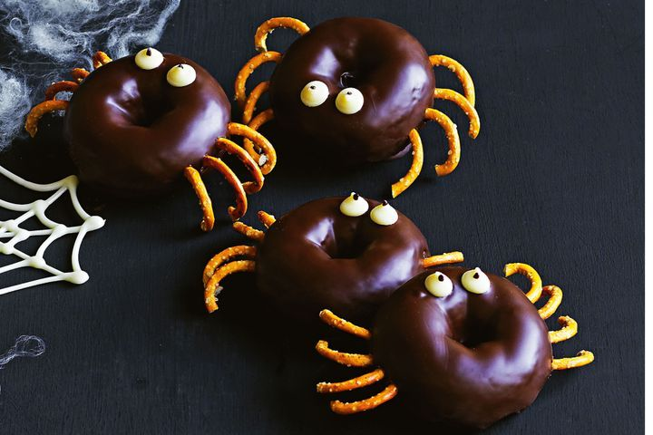

Chocolate Donut Spiders

Description
Create a sweet scare this Halloween, using some deliciously simple ingredients and a little imagination!
Ingredients
- 1 Packet of Nestlé Bakers’ Choice Dark Choc Melts
- 24 Nestlé Bakers’ Choice White Choc Bits
- 24 Baked Pretzel Twists
- 12 Store Bought Donuts
- 1 Tablespoon of Vegetable Oil
- Dark Chocolate Writing Icing
Steps
- Melt Nestlé Bakers’ Choice Dark Choc Melts following packet directions. Stir in 1 tablespoon of vegetable oil.
- Dip one side of each donut, one at a time, in the mixture. Place on a lined tray.
- Use Nestlé Choc Bits and dark chocolate writing icing to make eyes. Break pretzel twists into pieces and insert into donuts to make legs. Set aside to set.